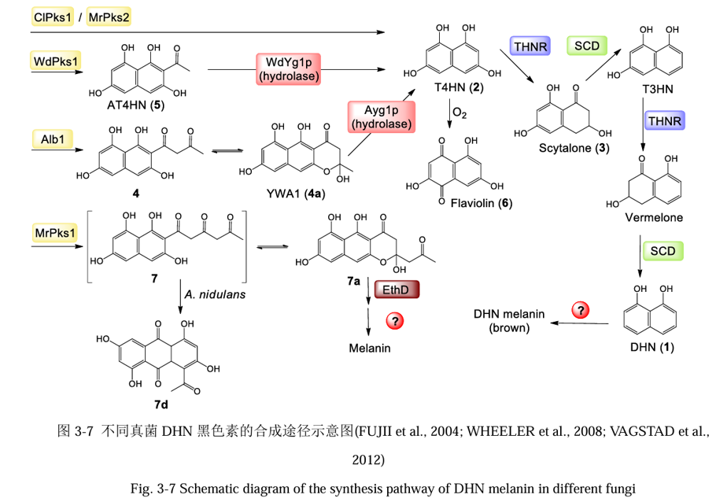
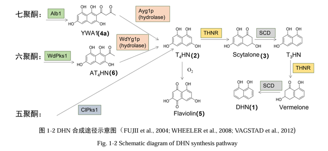

合成机理
DHN即1，8-二羟基萘酚（1,8-dihydroxynaphthalene），作为黑色素合成途径一直是黑色素研究的重点。DHN合成途径起始于非还原型聚酮合酶(non-reducing polyketides synthase, NR-PKS) 合成的萘酚类中间产物。在不同真菌中，DHN生物合成途径的主 要差异来自于这个中间产物的结构。目前已知三种聚酮合成途径：七聚酮途径、六聚酮途径、五 聚酮途径。


聚酮合酶基因获取
- 我们需要高效的聚酮合酶来进行DHN黑色素的生产，根据多份文献，我们最后选择了从罗伯茨绿疆菌中提取聚酮合酶基因
- 张玉洁等人的研究表明，罗伯茨绿僵菌中存在PKS1和PKS2同源蛋白，分别由MrPKS1基因簇和MrPKS2基因簇表达。MrPKS1基因簇的产物结构与已知的七聚酮途径中间产物YWA1 (WATANABE et al., 2000b) 与六聚酮途 径AT4HN (WHEELER et al., 2008) 十分相似。虽然其中不含有类似水解酶THNR和SCD去合作生成DHN，但MrPKS2基因簇中存在THNR和SCD的基因。
- 因此我们选择将MrPKS2基因簇导入底盘
底盘选择及其优势
- 过去对于黑色素合成的研究主要利用曲霉表达系统，我们选择用酿酒酵母 BJ5464-NpgA 异源表达 MrPKS2基因簇。
- 酿酒酵母的遗传背景清楚，遗传操作性强，这使得它成为代谢工程的首选底盘细胞之一。
- 酿酒酵母具有公认的安全性（GRAS）和良好的发酵性能，同时具有强大的耐受性，适合高密度培养，在学术研究和工业发酵中受到了广泛的应用。
- 与原核生物相比，酿酒酵母具有较为完整的翻译后修饰系统和细胞器系统，具有优良的鲁棒性，可以极大地保证异源基因遗传和表达的稳定性。
实验步骤
- 基因组及转录组数据分析：通过NCBI基因组数据库（http://www.ncbi.nih.gov/genome）获取真菌罗伯茨绿僵菌 （Metarhizium robertsii） ARSEF23 基因组数据。
- 菌株的培养。
- 真菌基因组的提取（提取真菌中的RNA，去除gDNA后反转录得cDNA）
- 酿酒酵母BJ5464-NpgA感受态细胞的制备以及转化。
- 酵母异源表达及转化产物分离鉴定(多重液相色谱分离、现代波谱解析)。